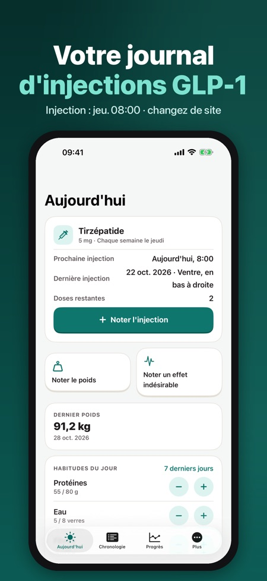
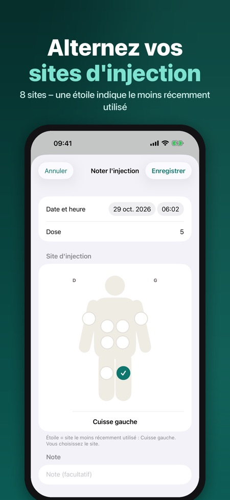
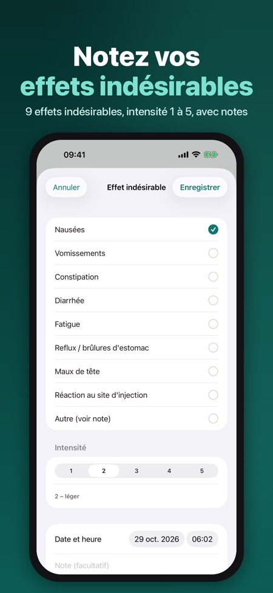

Injections, poids et rapport. Un journal calme et privé pour vos injections GLP-1 hebdomadaires ou quotidiennes : sites, poids, effets indésirables et un rapport PDF pour votre médecin.



Un journal privé pour les personnes sous traitement GLP-1 prescrit par leur médecin. Notez chaque injection, alternez les sites, suivez votre poids et vos effets indésirables – puis partagez un rapport PDF clair avec votre médecin.
JOURNAL DES INJECTIONS
• Rythme hebdomadaire ou quotidien, avec la dose fixée par votre médecin
• Schéma du corps avec 8 sites (ventre en quatre zones, cuisses, haut des bras) ; une étoile indique le site le moins récemment utilisé
• Doses restantes dans vos stylos, avec un rappel à temps pour un nouveau stylo ou une ordonnance
RAPPELS
• Rappel d'injection à votre jour et à votre heure
• Les notifications sur l'écran verrouillé n'affichent jamais de nom de médicament ni de dose
POIDS ET HABITUDES
• Poids et tour de taille avec graphique et poids cible
• Compteurs quotidiens de protéines, d'eau et de fibres, plus les pas d'Apple Santé
EFFETS INDÉSIRABLES
• Nausées, vomissements, constipation, diarrhée, fatigue, reflux, maux de tête, réaction au site d'injection ou autre, intensité 1 à 5 et notes
• Affichés dans la chronologie à côté de vos injections
RAPPORT POUR LE MÉDECIN
• PDF pour la période de votre choix : doses, poids et résumé des effets indésirables, dans la langue de l'app
PRIVÉ
Aucun compte. Votre journal reste sur votre iPhone (et dans Apple Santé uniquement si vous l'activez). Vos données de santé ne sont jamais envoyées ; seulement des statistiques d'utilisation anonymes, désactivables. Pas de publicité, pas de suivi. Verrouillage Face ID facultatif.
PRO
Pro (abonnement annuel ou achat unique à vie) ajoute l'historique complet et les graphiques, les tendances des effets indésirables, le rapport PDF, la synchronisation Apple Santé et plusieurs médicaments. Sans Pro, vous gardez le journal des injections, les rappels et le poids des 30 derniers jours.
La liste comprend Wegovy®, Ozempic®, Mounjaro®, Saxenda®, Trulicity® et Victoza® avec leurs dosages issus des informations produit de l'EMA, uniquement pour choisir le vôtre. L'app est un journal : aucun conseil de dose, aucun conseil d'augmentation, aucune estimation du taux de médicament et aucun diagnostic. Suivez toujours les instructions de votre médecin. Sans lien avec un fabricant ; les marques appartiennent à leurs propriétaires.